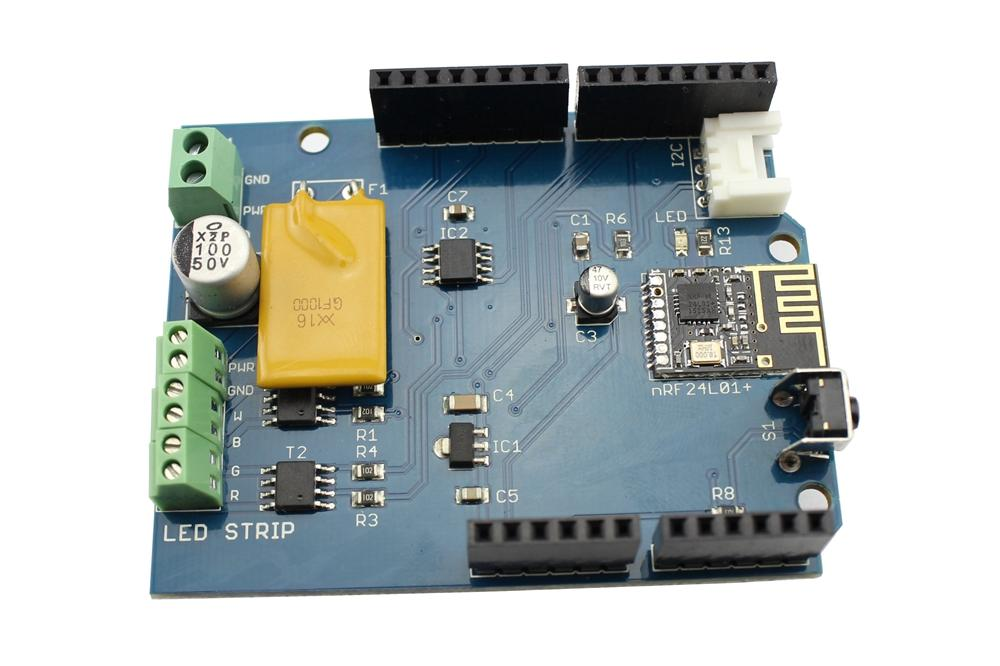

RGBW Stripe WireLess Shield has 4 PWM output to connect RGBW LED Strip.
Anyone can handle a load of 1.5 A with a voltage of 5 to 24 V.
Integrated control in 5 Arduino easily provide power from the input power supply. Self-renewing fuse protects LED Strip overcurrent.
For remote control RGB tape used popular transceiver nRF24L01+.
The most interesting is that the board has a memory, and you can now update the firmware of your Arduino through the air!
|  | |
|
|